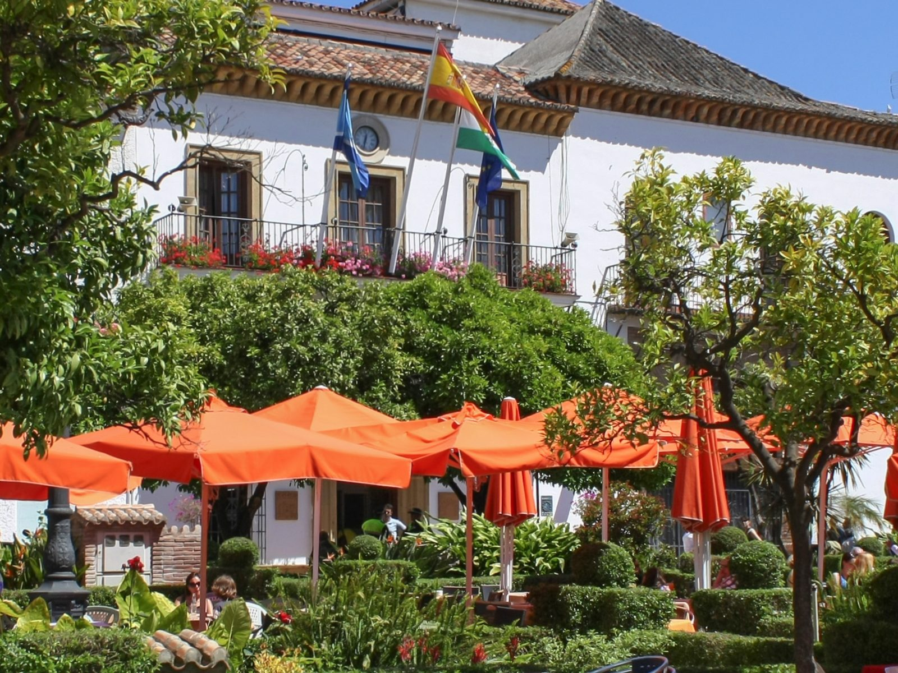
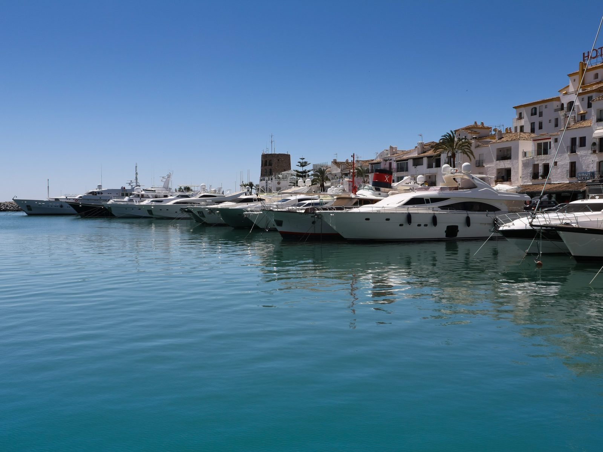
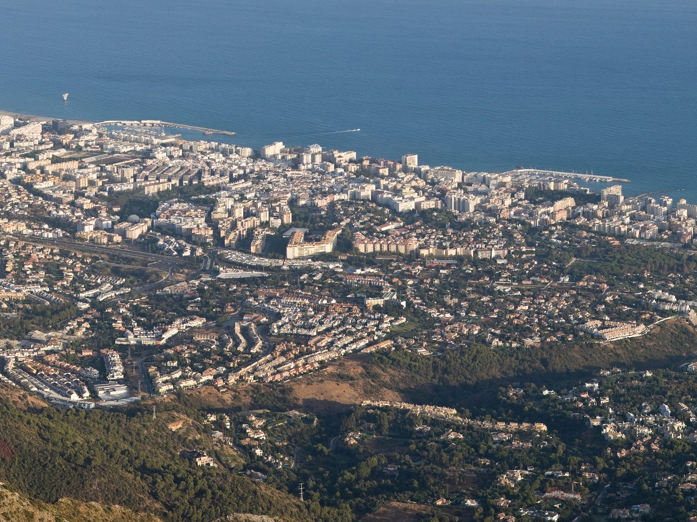

Best For
Buyers who want an established international base with year-round services.

A mature year-round market with beaches, established services and very different residential settings within one municipality.
Marbella works for both full-time living and longer stays, but the micro-location matters. Marbella East is quieter and more residential, the Golden Mile prioritises access to the centre and Puerto Banus, and the hills trade walkability for privacy and views.
Buyers who want an established international base with year-round services.
Beachside, town, golf and hillside homes offer very different daily routines.
International schools, private healthcare, shopping and restaurants support longer stays.
Central Marbella is typically around 40 to 45 minutes from Malaga Airport by car.
Beyond the property listings, this is the texture of daily life that keeps people coming back.

The old town's Plaza de los Naranjos, ringed by orange trees, is still the best place to feel Marbella before the marina culture took over -- narrow whitewashed lanes, tapas bars and a genuinely local pace.

The marina is the coast's best-known stage: superyachts, boutique shopping and a see-and-be-seen restaurant scene. It also anchors property values across Nueva Andalucía and the western Golden Mile.
The palm-lined stretch between central Marbella and Puerto Banús, home to Puente Románo and the Marbella Club -- still the reference point for prime beachside real estate on this coast.

The limestone peak behind the town gives Marbella its skyline and a genuinely good hiking trail, with views back over the coast that most visitors never see.
Photography: Mark Gilbert, Jeff Hitchcock, David Iliff -- via Wikimedia Commons (CC BY / CC BY-SA).
Use the area average for orientation only. New-build pricing depends heavily on the exact location, specification and views.
Indicative asking-price average for resale homes in June 2026. New developments and prime micro-locations can sit above the municipal average.
Only projects currently matching this area are shown. Price and availability are confirmed before a viewing.
Read the full Marbella apartments & penthouses guide


A small collection of elevated homes with open terraces, sea views and a quieter coastal setting.


A 139-home urban resort near San Pedro and Puerto Banus, with four pools, a full wellness hub and the beach within walking distance.


34 apartments and penthouses in Marbella's Guadalmina Golf Valley, moments from San Pedro and Puerto Banús.
Tell us your budget and priorities. We will reply with matching projects and current availability.